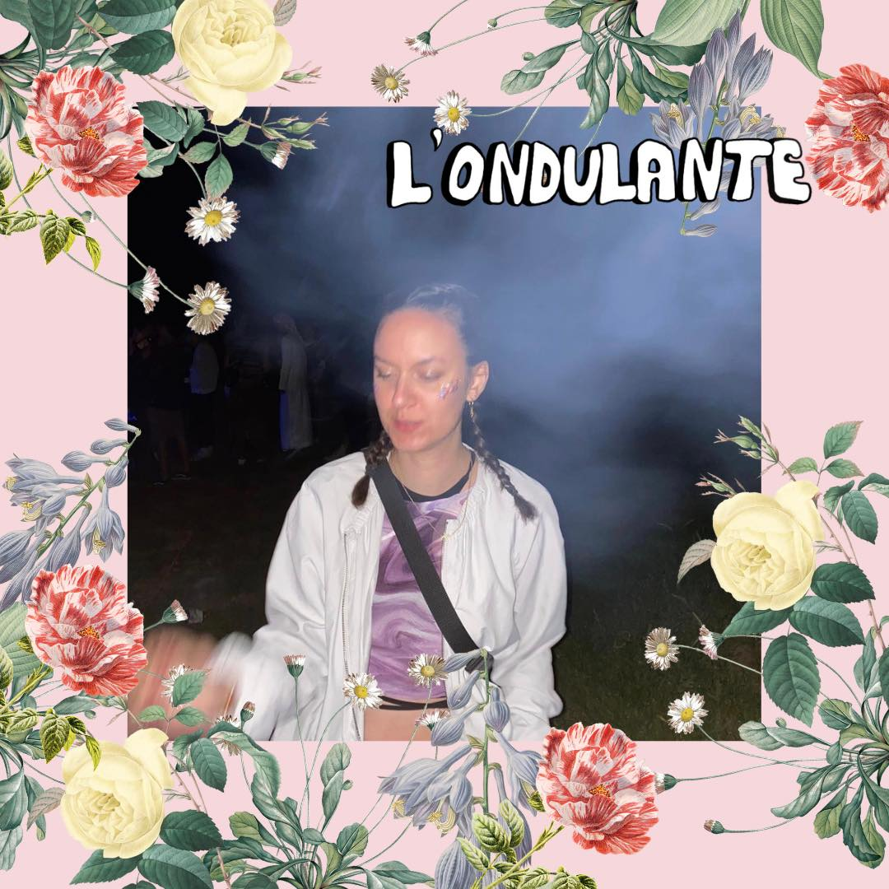
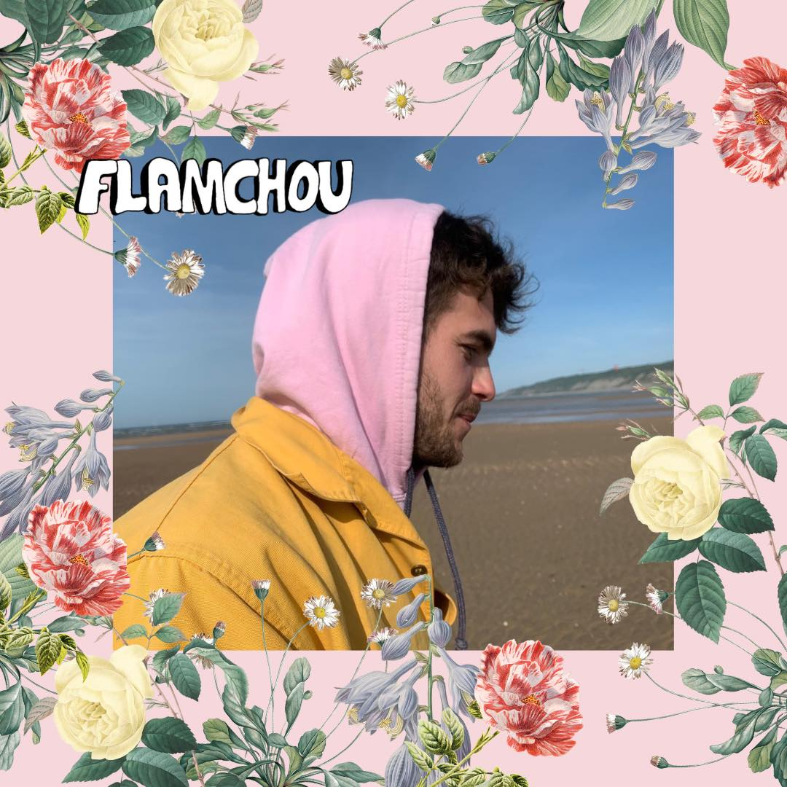

La Perlière, c’est une bande de copains versaillais qui organise chaque année une petite sauterie en Normandie. Dans les grandes lignes, ce sont près de 20h de son en continu, de la binouze, de la bouffe, des copains, des rigoleries en plein air et surtout de la bonne humeur.Pour cette deuxième édition, on voit les choses en GRAND. Plus de copains, plus de DJ, plus grande scène, et surtout, surtout, le Soleil en special guest (promis).
ALORS PRENDS VITE TA PLACE! 🎟La Perlière 🌸 (n.f.): week-end de juin fameux, où bons copains venus des quatre coins de la France se retrouvent chaque année pour taper du pied et boire des coups dans le bocage normand. En quelques chiffres, La Perlière 2021, c’était : 165 compères/ 43 tentes/ 2 kilos de son/ 15h de disco, funk, house, classics et techno en DJ Set/ 90kg de hot-dogs et autres dingueries/ 450 litres de bière, 110 bouteilles de pif, 70 litres de hard et 75mL d’Evian Citron Vert.
Pour cette année, la recette reste la même, on augmente juste un peu (beaucoup) le dose de kiff (et d'alcool) : 1 SCÈNE, 1 BAR, 2 structures construites pour l’occasion, 1 STAND BOUFFE, des ESPACES DÉTENTES, 1 CAMPING, 17 heures de DJ SET, 1 LINE-UP léché, OPEN BAR.
Voici ROBI & L’ONDULANTE nos premiers venus. On espère que leurs inspirations house/microhouse/trance vous plairont!
Le collectif de La Perlière ~ LA CHAUM’S ~ est de retour cette année avec un beau bouquet musical 💐. Voici GOLD COAST CLUB & FLAMCHOU 👨🌾👨🌾
Les fans de techno seront content 👹. Avec SATURE & les potos de la Perliere ~ LA PERLIERE & FRIENDS 🌼 aka M.MUNOZ
🛣 LIEU : La Perlière, Chambord, 27250 --- 🕰 HORAIRES: Arrivée à 15h Samedi 25 Juin/ Départ à 11h30 le lendemain. Prévoir 1h45 de voiture depuis Versailles / extrême vigilance par rapport aux radars changeants !!! --- 🏎 COVOIT : Voici un lien pour organiser les covoits et limiter les trajets à vide.
Choisis une voiture pour le trajet 🚕